Spatial crime analysis: hot spots, clusters and near repeats
Source:vignettes/spatial-crime-analysis.Rmd
spatial-crime-analysis.RmdHot spots, clustering, scan statistics, near-repeat tests and surfaces of crime density.
Each section is one help page: what the function is for, the example
of its help page as it runs, and the plot of its result where the
package draws one. ?name gives the arguments and the value
in full.
Knox test of near repeats
knxnr(): Asks whether incidents close together in space
also happen close together in time more often than chance gives: the
near-repeat pattern of burglary and shootings (Knox 1964; Townsley,
Homel and Chaseling 2003). Every pair of incidents within the largest
distance is put in a band of distance, (ds[k - 1], ds[k]], and a band of
time, (dt[l - 1], dt[l]] (the first bands start at 0 and include it),
and each cell’s count is compared with its expectation when the times
are exchangeable among the locations, which is exact: E = S_k T_l / P,
with S_k the pairs in distance band k,
T_l the pairs in time band l and
P = n (n - 1) / 2. Each cell has a one-sided permutation
p-value, the times shuffled among the locations nsim times
from seed, and the Poisson tail P(X >= obs)
with the expectation as its mean, the classical Knox approximation for a
rare cell. Cells are tested separately: a table of many cells shows some
small p-values by chance alone. A near-repeat pattern also arises when
one offender commits a series; the test speaks to timing, not to its
cause.
set.seed(1)
p <- cbind(x = runif(150, 0, 2000), y = runif(150, 0, 2000))
k <- knxnr(p, t = runif(150, 0, 365), ds = c(200, 400), dt = c(14, 28),
nsim = 99, seed = 2)
k
#> knxnr: 150 incidents, 1322 close pairs, 99 permutations
#> dlo dhi tlo thi obs exp ratio p ppois
#> 0 200 0 14 31 25.41369 1.2198149 0.12 0.15624997
#> 200 400 0 14 94 76.08752 1.2354195 0.02 0.02588842
#> 0 200 14 28 29 23.99195 1.2087390 0.16 0.17702659
#> 200 400 14 28 56 71.83087 0.7796091 0.99 0.97655462
plot(k)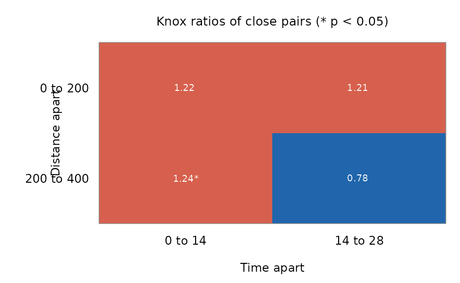
Kernel intensity surface of incidents
kdsurf(): Where incidents cluster: the intensity
lambda(u) = sum_j w_j k(u - p_j) with the product normal kernel of
standard deviations h (along x and y), in incidents per
unit area, on a regular grid or at given locations. On a grid it is the
surface of MASS::kde2d() times the number of points, with
the same default bandwidth (the normal reference 1.06 min(sd, IQR /
1.34) n^(-1/5) on each axis, a quarter of
MASS::bandwidth.nrd()). With a study rectangle
win the edge corrections of
spatstat.explore::density.ppp() apply:
"uniform" divides the intensity at u by
e(u), the share of the kernel centred at u
inside win (Diggle 1985), and "diggle" divides
each point’s kernel by its own share e(p_j) (Jones 1993).
On a grid the smallest sets of cells holding each share
cover of the surface’s mass (highest density regions,
Hyndman 1996) are reported with their area: half the incidents in a few
per cent of the map is concentration. The bandwidth decides how sharp
the surface is and should be reported with any map.
set.seed(1)
p <- cbind(x = c(rnorm(80, 2, 0.5), runif(40, 0, 6)),
y = c(rnorm(80, 3, 0.5), runif(40, 0, 6)))
k <- kdsurf(p, win = c(0, 6, 0, 6), nx = 50, edge = "uniform")
k
#> kdsurf: 50 x 50 grid, sd 0.2794 by 0.2655, peak 49.54
#> cover level area share
#> 0.5 13.021117 2.413994 0.0644
#> 0.9 1.626066 15.773428 0.4208
image(k$x, k$y, k$z)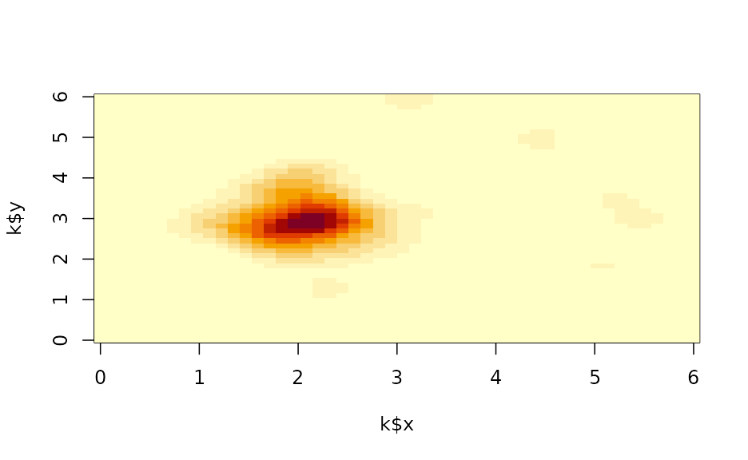
kdsurf(p, h = 0.4, at = "points")$z[1:5]
#> [1] 27.05935 34.01434 21.47548 14.47467 30.98250
plot(k)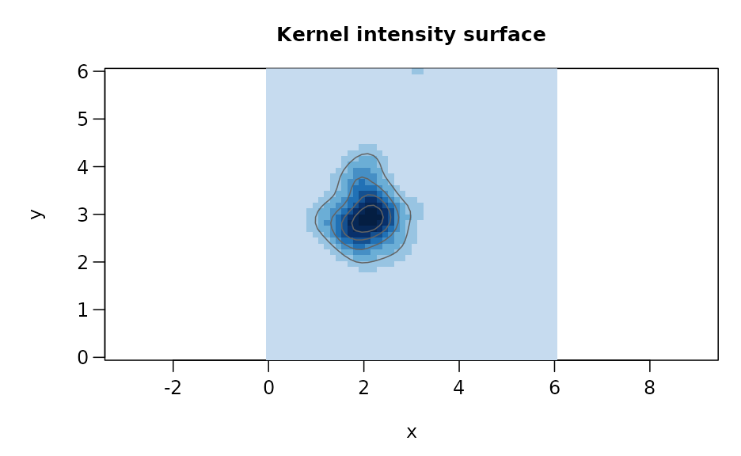
DBSCAN clusters of incidents
dbscn(): Density-based clusters (Ester, Kriegel, Sander
and Xu 1996): a core point has at least minpts points
within distance eps, itself included; core points within
eps of each other share a cluster, and a point that is not
core but lies within eps of a core point (a border point)
joins the first cluster that reaches it, clusters being grown from the
core points in input order. The rest is noise. With
border = FALSE border points are noise too (DBSCAN*,
Campello, Moulavi and Sander 2013), which makes the result independent
of the order. These are the clusters of dbscan::dbscan(),
numbered the same way.
set.seed(1)
p <- rbind(cbind(x = rnorm(30, 0, 0.2), y = rnorm(30, 0, 0.2)),
cbind(x = rnorm(30, 3, 0.2), y = rnorm(30, 1, 0.2)),
cbind(x = runif(10, -2, 5), y = runif(10, -2, 3)))
d <- dbscn(p, eps = 0.3, minpts = 5)
d
#> dbscn: 2 clusters of 70 points, 10 noise
#> cluster points
#> 1 30
#> 2 30
table(d$cl, useNA = "ifany")
#>
#> 1 2 <NA>
#> 30 30 10Hot spots and how long they last
hsper(): Counts incidents in square grid cells of side
cell (from the corner org) for each period and
marks as hot, in each period, the k = ceiling(top * m)
busiest of the m cells that ever hold an incident, with
every cell tied with the k-th; when a tie would make more than 2 k cells
hot the counts do not single them out and the tied cells are left out
(counted in tiedout). Each period gets its concentration
(the fewest cells holding half its incidents), the share of its
incidents in hot cells, and the Jaccard overlap of its hot set with the
period before (NA when either is empty); each cell gets the
number of periods it was hot and its longest run of successive hot
periods, the persistence that tells chronic hot spots from flare-ups
(Weisburd, Bushway, Lum and Yang 2004).
set.seed(1)
n <- 600
p <- cbind(x = c(rnorm(300, 2, 0.3), runif(300, 0, 10)),
y = c(rnorm(300, 2, 0.3), runif(300, 0, 10)))
h <- hsper(p, prd = rep(2021:2024, length.out = n), cell = 1, top = 0.1)
h
#> hsper: 99 active cells, the 10 busiest hot in each of 4 periods
#> period n active nhalf shalf hot tiedin tiedout hotshr jacc
#> 2021 150 57 4 0.04040404 20 10 0 0.7533333 NaN
#> 2022 150 57 4 0.04040404 19 9 0 0.7466667 0.2580645
#> 2023 150 54 4 0.04040404 11 1 0 0.6666667 0.2000000
#> 2024 150 62 4 0.04040404 17 7 0 0.7000000 0.2173913
subset(h$cells, nhot == 4)
#> x y n nhot run
#> 11 1.513147 1.533045 88 4 4
#> 12 1.513147 2.533045 76 4 4
#> 21 2.513147 1.533045 90 4 4
#> 22 2.513147 2.533045 54 4 4
plot(h)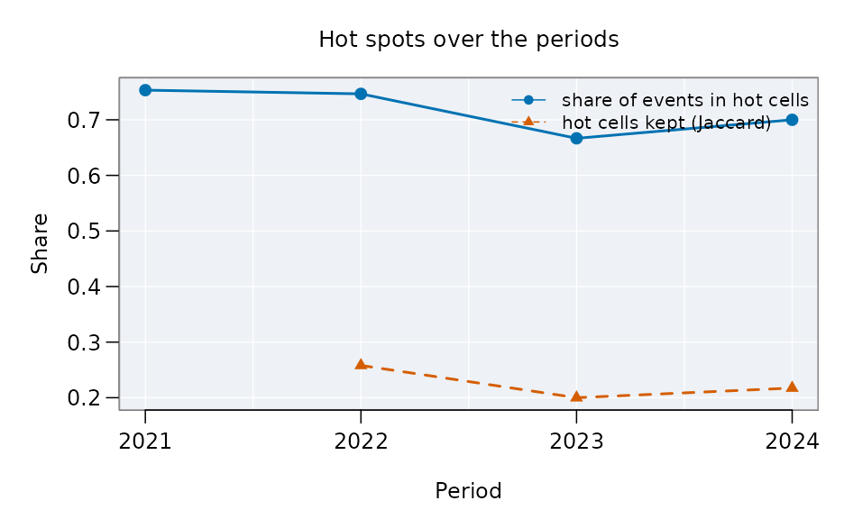
Empirical-Bayes shrinkage of hot-spot counts
ebshr(): The places with the highest counts in one
period tend to fall in the next by chance alone: a count
y = theta + e is a true rate plus noise of variance
v (for Poisson counts, the mean count, the default). The
linear shrinkage estimate (1 - B) y + B ybar toward the weighted mean
has expected loss (1 - B)^2 S_e + B^2 S_theta when the noise has
weighted mean 0 and is uncorrelated with the rates, which is smallest at
B* = S_e / (S_e + S_theta), where it never exceeds the loss of the raw
counts (James and Stein 1961; Efron and Morris 1975).
S_theta is estimated as the excess of the weighted scatter
of y over v (0 if negative). The predicted
fall of a place is B (y - ybar): the size of the regression
to the mean a hot-spot programme should expect without doing anything.
That B* lies in [0, 1], minimises the loss and never does worse than no
shrinkage is proved in Lean: see proof("ebshr").
y <- c(40, 12, 9, 25, 7, 31, 5, 18)
s <- ebshr(y)
s
#> ebshr: shrinkage 0.1327 (B* 0.1327) toward 18.38; signal variance 120.1, noise 18.38
#> y shrunk fall
#> 40 37.130656 2.86934447
#> 12 12.845876 -0.84587611
#> 9 10.243935 -1.24393546
#> 25 24.120952 0.87904773
#> 7 8.509308 -1.50930836
#> 31 29.324834 1.67516642
#> 5 6.774681 -1.77468126
#> 18 18.049757 -0.04975742
s$est[which.max(y), ]
#> y shrunk fall
#> 1 40 37.13066 2.869344
plot(s)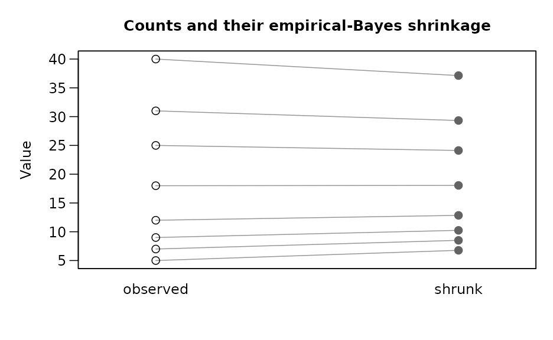
Space-time scan statistic of incidents
kscan(): Kulldorff’s space-time permutation scan
(Kulldorff, Heffernan, Hartman, Assuncao and Mostashari 2005), which
needs the incidents alone, no population: cylinders are circles of
radius r about each distinct incident location times
windows [s, s + tw) that start at each distinct incident time. A
cylinder holding c incidents, of n_C in its
circle (at any time) and n_W in its window (anywhere),
expects e = n_C n_W / n when place and time are independent, and scores
the Poisson log-likelihood ratio c log(c / e) + (n - c) log((n - c) / (n
- e)) when c > e, 0 otherwise (Kulldorff 1997). The most
likely cluster has the largest ratio; secondary clusters follow in order
of their ratio, each the best of its circle among those whose circles
overlap none chosen before. Each p-value compares the cluster’s ratio
with the largest ratio of the whole scan with the times shuffled among
the locations nsim times from seed, so a
secondary cluster’s p-value is conservative. The shuffles run over the
incidents in the order of their coordinates and times, so the clusters
and the p-values do not depend on the order of the rows; a tie in the
ratio goes to the centre first in that order. That the ratio is never
negative is proved in Lean: see proof("kscan"). The work
grows as the number of locations times length(r) times the
distinct times times length(tw), for the scan and for each
permutation.
set.seed(1)
p <- cbind(x = c(runif(150, 0, 20), rnorm(20, 5, 0.3)),
y = c(runif(150, 0, 20), rnorm(20, 15, 0.3)))
t <- c(sample(0:99, 150, TRUE), sample(40:44, 20, TRUE))
s <- kscan(p, t = t, r = c(1, 3), tw = c(5, 20), top = 2, nsim = 99,
seed = 1)
s
#> kscan: 2 clusters of 170 incidents, 99 permutations
#> x y r start end n exp ncirc nwin rr llr p
#> 4.959446 15.23629 1 40 45 20 3.4117647 20 29 6.510345 19.636580 0.01
#> 9.544601 11.09801 3 4 9 4 0.3235294 11 5 12.637459 6.422689 0.08
plot(s)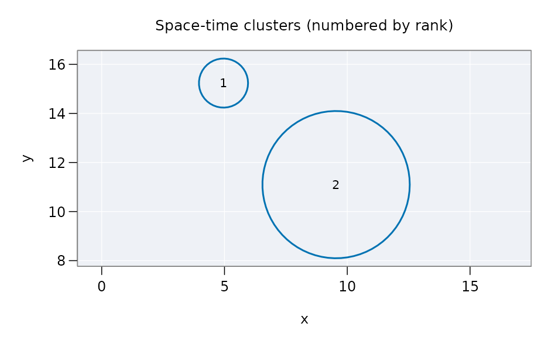
Global Moran’s I with its inference
gmoran(): Moran’s (1950) I of values on units with
spatial weights w: with z = x - mean(x), I = n
/ S0 sum_ij w_ij z_i z_j / sum z_i^2, its expectation
-1 / (n - 1) and its variance under normality and under
randomisation (Cliff and Ord 1981), the z statistics and their upper
normal tails (positive autocorrelation: neighbours alike), and, with
nsim > 0, the permutation p-value (1 + #{I* >= I}) /
(nsim + 1), the values shuffled over the units from seed.
These are the statistics of spdep::moran.test() and
spdep::moran.mc(). Given a matrix or data frame, each
column is tested on the same weights: one row per category or year, a
sweep of a variable across a polygon surface. lmorn() gives
the local statistics, which add up to S0 I with row-standardised
weights.
set.seed(1)
p <- cbind(x = runif(50), y = runif(50))
w <- spwt(p, k = 4)
gmoran(p[, 1] + rnorm(50, sd = 0.2), w, nsim = 99, seed = 1)
#> var i e vn vr zn zr pn
#> 1 x 0.6251582 -0.02040816 0.007802795 0.007875543 7.30829 7.274458 1.352813e-13
#> pr pperm s0
#> 1 1.739075e-13 0.01 50
# a sweep over three yearly counts
gmoran(data.frame(y1 = rpois(50, 3), y2 = rpois(50, 3 + 4 * p[, 1]),
y3 = rpois(50, 9 * p[, 1])), w)
#> var i e vn vr zn zr
#> 1 y1 -0.0008085382 -0.02040816 0.007802795 0.007858451 0.2218823 0.2210952
#> 2 y2 0.1023809524 -0.02040816 0.007802795 0.007581203 1.3900640 1.4102328
#> 3 y3 0.3831195986 -0.02040816 0.007802795 0.007584193 4.5682339 4.6336020
#> pn pr pperm s0
#> 1 4.122028e-01 4.125092e-01 NaN 50
#> 2 8.225473e-02 7.923548e-02 NaN 50
#> 3 2.459255e-06 1.796788e-06 NaN 50Bivariate Moran’s I
bvmor(): Whether high values of one variable sit next to
high values of another (Wartenberg 1985): with zx and
zy the centred values, I = n / S0 sum_ij w_ij zx_i zy_j /
sqrt(sum zx^2 sum zy^2), which is Moran’s I (gmoran()) when
y is x (proved in Lean: see
proof("bvmor")) and, with row-standardised weights,
spdep::moran_bv()‘s statistic. Inference is by permutation:
y’s values are shuffled over the units nsim
times from seed while x stays, so under the
null its expectation is 0. The statistic mixes the two variables’
correlation at a unit with their spatial association; it is not a test
of spillover from x to y.
Spatial regression: lag, error and combined models
sarml(): Fits the spatial lag model y = rho W y + X beta
+ e, the spatial error model y = X beta + u with u = lambda W u + e, or
both at once ("sac", one weights matrix for both), with
normal errors, by maximum likelihood (Ord 1975; Anselin 1988): the
likelihood is concentrated in rho or lambda
and maximised by Brent’s method on (-1 / m, 1 / m), m the
largest row sum of W (which bounds its spectral radius),
with log |I - rho W| from a dense LU factorisation, so the cost grows as
n^3 per evaluation (at most 5000 units). The combined model
is maximised over both parameters by Nelder and Mead’s simplex. Standard
errors come from the inverse of the expected information matrix (Anselin
1988, ch. 6); these are the estimates of
spatialreg::lagsarlm(), errorsarlm() and
sacsarlm(). durbin = TRUE adds the lags W x of
the varying columns (the spatial Durbin model, or the Durbin error
model). method = "2sls" fits the lag model by two-stage
least squares with the instruments W x and W^2 x (Kelejian and Prucha
1998), as spatialreg::stsls() does, without a likelihood;
its standard errors divide the residual sum of squares by n
less the coefficients.
set.seed(1)
p <- cbind(x = runif(80), y = runif(80))
w <- spwt(p, k = 5)
W <- matrix(0, 80, 80)
W[cbind(w$i, w$j)] <- w$w
x <- rnorm(80)
y <- solve(diag(80) - 0.5 * W, 1 + 2 * x + rnorm(80))
f <- sarml(y, x, w)
f
#> sarml: lag model by ml, 80 units, log-likelihood -119.34 (OLS -128.625)
#> term est se z p ols olsse
#> (Intercept) 1.0772273 0.20235921 5.323342 1.018778e-07 1.973029 0.1375247
#> x 1.9786039 0.12851286 15.396156 1.736932e-53 1.900068 0.1489361
#> rho 0.4874943 0.08976277 5.430919 5.606463e-08 NaN NaN
spill(f)
#> term direct indirect total sed sei set
#> 1 x 2.084212 1.776436 3.860648 0.1485669 0.6471067 0.7425332
plot(f)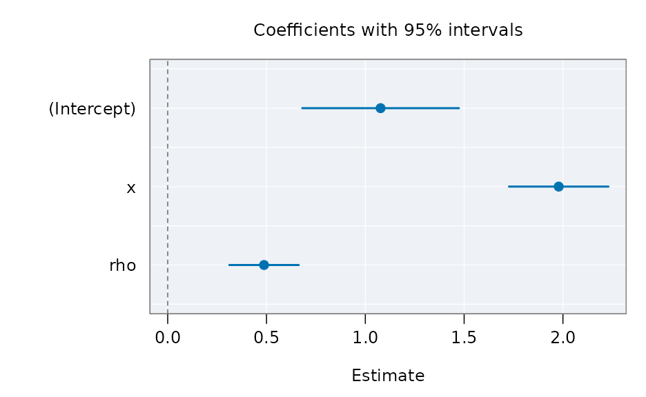
Direct, indirect and total effects of a spatial lag model
spill(): In a model with a spatial lag of the outcome, y
= rho W y + X beta + W X theta + e, a change in covariate k
at every unit moves the outcomes by S_k = (I - rho W)^-1 (beta_k I +
theta_k W): the mean of its diagonal is the direct effect, the mean row
sum the total, and their difference the indirect effect, the spillover
to other units (LeSage and Pace 2009). An analysis that reads
beta_k alone can report “no effect” where the effect is all
spillover. With row-standardised weights the total is
(beta_k + theta_k) / (1 - rho), proved in Lean: see
proof("spill"). Standard errors are by the delta method in
rho, beta_k and theta_k, with the
exact derivatives d (I - rho W)^-1 / d rho = (I - rho W)^-1 W (I - rho
W)^-1. The effects are those of spatialreg::impacts(),
which gives simulated rather than delta-method standard errors.
Cross-type K function and the segregation test
crossk(): Whether incidents of one type (i)
have incidents of another (j) near them more than
independence gives: the cross-type K function K_ij(r) = A / (n_i n_j)
sum e_ab 1(d_ab <= r) over pairs of a point a of type
i and a point b of type j in the
rectangle win of area A, with Ripley’s (1977)
isotropic correction e_ab (the length of the circle about
a through b over its length inside
win), and L = sqrt(K / pi) (Lotwick and
Silverman 1982). Under independence K = pi r^2. With i
equal to j it is Ripley’s K of that type. These are the
values of spatstat.explore::Kcross() with
correction = "isotropic".
set.seed(1)
p <- cbind(x = runif(120), y = runif(120))
m <- ifelse(p[, 1] < 0.5, "burglary", "robbery")
crossk(p, marks = m, i = "burglary", j = "robbery",
win = c(0, 1, 0, 1), r = c(0.05, 0.1, 0.2), sigma = 0.1,
nsim = 19, seed = 1)
#> crossk: K of robbery about burglary
#> r k l theo
#> 0.05 0.000278474 0.009414936 0.007853982
#> 0.10 0.001113896 0.018829872 0.031415927
#> 0.20 0.023148107 0.085838634 0.125663706
#> segregation T 47.42, p 0.05 (19 relabellings)
res <- crossk(p, marks = m, i = "burglary", j = "robbery",
win = c(0, 1, 0, 1), r = c(0.05, 0.1, 0.2), sigma = 0.1,
nsim = 19, seed = 1)
plot(res)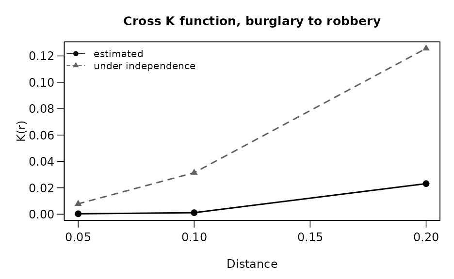
Quadrat count test
qdrtst(): Counts the points in an nx by
ny grid of equal tiles of the rectangle win
and tests complete spatial randomness by Pearson’s chi-square,
X2 = sum (n_k - e)^2 / e with e the mean
count, on nx ny - 1 degrees of freedom: the upper tail against
clustering and the two-sided p-value (twice the smaller tail,
quadrat.test()’s default), which also flags regular
patterns. A point on an inner tile boundary goes to the tile above or to
its right, one on the outer edge to the tile inside. These are the
values of spatstat.explore::quadrat.test(). The counts feed
morsta().
set.seed(1)
p <- cbind(x = runif(100, 0, 2), y = runif(100))
q <- qdrtst(p, win = c(0, 2, 0, 1), nx = 4, ny = 2)
q
#> qdrtst: X2 5.6 on 7 df, p 0.587 (two-sided 0.826)
#> [,1] [,2] [,3] [,4]
#> [1,] 13 16 10 15
#> [2,] 7 16 11 12
morsta(q$counts)
#> imor mclu muni imst chi p
#> 0.9858586 1.0910380 0.9463623 -0.1318235 5.6000000 0.5871510
plot(q)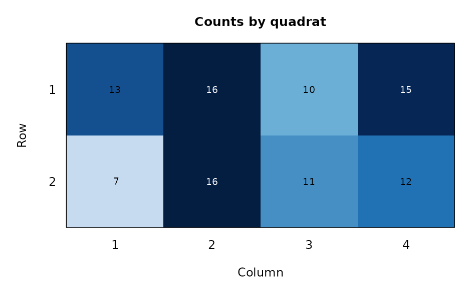
Morisita’s index of dispersion
morsta(): Morisita’s (1959) index of the counts in
n equal quadrats, I = n (sum x^2 - S) / (S^2 - S) with
S the total: 1 for a random pattern, above for clumping
(n when all fall in one quadrat), below for an even spread.
The uniform and clumped indices are the values of I at the
crit / 2 tails of chi-square on n - 1 degrees
of freedom, and the standardised index of Smith-Gill (1975) maps
I onto [-1, 1] with them at -0.5 and
0.5; chi = I (S - 1) + n - S has the
chi-square distribution under randomness. These are the values of
vegan::dispindmorisita().
Indices of residential segregation
dissix(): The evenness of groups across areal units
(Massey and Denton 1988), from a table of counts with one row per unit
and one column per group: Duncan’s dissimilarity D = sum |x_ik / X_k -
x_il / X_l| / 2 between each pair of groups (the share of either group
that would have to move for the two to be spread alike), and for each
group against the rest the segregation index IS, Theil’s
entropy index H, Atkinson’s index with shape
delta and the Gini index. With weights w
between the units, Morrill’s (1991) adjusted D subtracts
the weighted mean absolute difference of the pair’s shares between
neighbouring units, so that segregation across a boundary counts less
than segregation within. Units with no one in them are left out. That
D lies between 0 and 1 is proved in Lean: see
proof("dissix").
x <- cbind(a = c(90, 80, 10, 5, 50), b = c(10, 20, 85, 95, 50))
dissix(x)
#> dissix: dissimilarity between groups
#> a b
#> a 0.0000000 0.6284779
#> b 0.6284779 0.0000000
#> group is h atk gini
#> a 0.6284779 0.4052672 0.5217079 0.7680033
#> b 0.6284779 0.4052672 0.5217079 0.7680033
dissix(x, w = spwt(nb = list(2, c(1, 3), c(2, 4), c(3, 5), 4),
type = "contig"))$dm
#> a b
#> a 0.0000000 0.3134779
#> b 0.3134779 0.0000000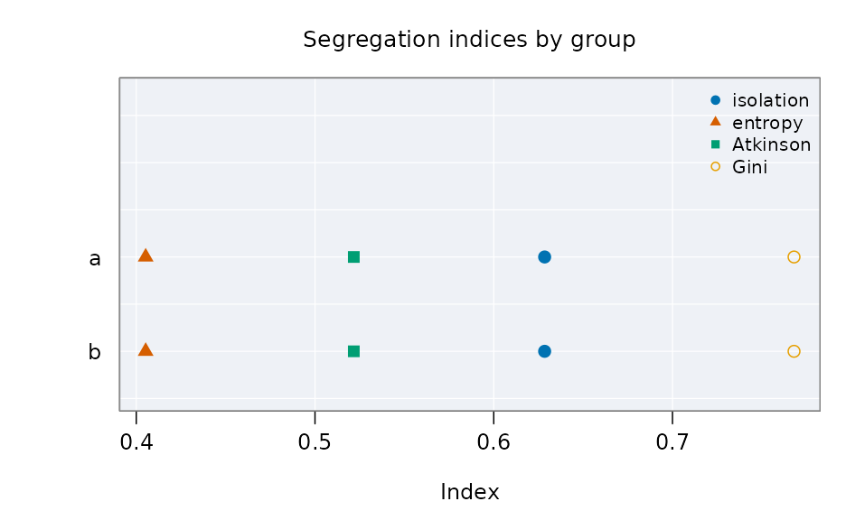
Points in polygons, and the population the units cover
pinpl(): Finds the region holding each point (a
facility, a station, an incident) by the even-odd rule, a point on a
boundary counting as inside; a region given as several rings (parts and
holes) is one region, and a hole is any ring inside another of the same
region. A point outside every region gets NA; one inside
overlapping regions takes the first by label and nreg says
how many hold it. Coordinates are taken as planar (longitude and
latitude work for regions small enough that their edges are straight in
degrees).
sq <- function(x0, id) {
data.frame(x = x0 + c(0, 1, 1, 0), y = c(0, 0, 1, 1), id = id)
}
poly <- rbind(sq(0, "A"), sq(1, "B"), sq(2, "C"))
u <- pinpl(cbind(x = c(0.5, 0.2, 2.5, 9), y = c(0.5, 0.7, 0.5, 9)),
poly = poly, pop = c(1200, 800, 450))
u
#> pinpl: 3 of 4 points in 2 of 3 regions; they cover 67.3% of the population, which is not a rate denominator
#> region units pop hasunit popshr
#> A 2 1200 TRUE 0.4897959
#> B 0 800 FALSE 0.3265306
#> C 1 450 TRUE 0.1836735
u$reg
#> [1] "A" "A" "C" NA
plot(u)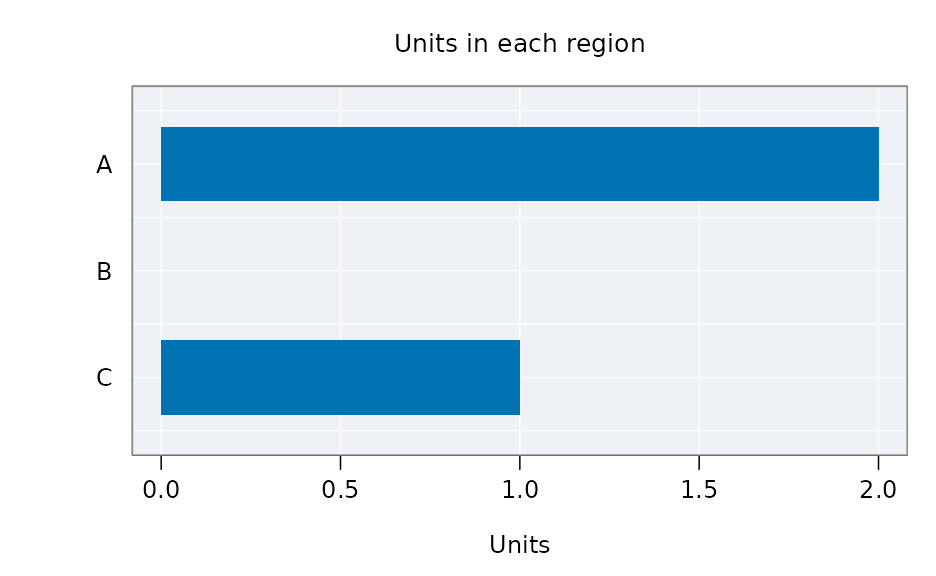
Crosswalk of counts between two sets of areal units
arwt(): Moves values (counts, populations) kept on one
set of units (an old boundary version, say) onto another, through the
pairs of a source and a target unit that overlap: each source’s value is
split among its targets in proportion to area, the size of
the overlap (its area, or its population for a population-weighted
crosswalk), which assumes the value spread uniformly over the source.
Where each source lies in one target (a boundary version that only
merges units) the result is exact aggregation and exact is
TRUE; splitting a source is an approximation. A source with
no pair is lost (lost), and each source’s main target (its
largest share) maps an old identifier onto the new scheme. The
concentration of the result across the targets is reported as the Gini
coefficient and the share of the largest top targets.
# four old units onto three new ones; unit d is split 70/30 by area
arwt(c(a = 120, b = 40, c = 60, d = 100),
from = c("a", "b", "c", "d", "d"), to = c("N1", "N1", "N2", "N2", "N3"),
area = c(1, 1, 1, 7, 3), top = 1)
#> arwt: 4 sources onto 3 targets, sources split by overlap
#> to value
#> N1 160
#> N2 130
#> N3 30
#> gini top1
#> 0.2708 0.5000
res <-
arwt(c(a = 120, b = 40, c = 60, d = 100),
from = c("a", "b", "c", "d", "d"), to = c("N1", "N1", "N2", "N2", "N3"),
area = c(1, 1, 1, 7, 3), top = 1)
plot(res)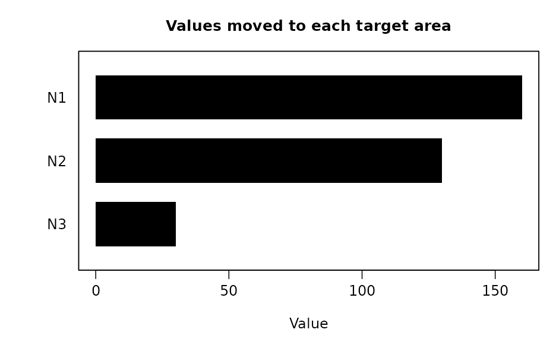
Crosswalk between boundary versions
bndxw(): Carries values kept on one set of areas (the
158 neighbourhoods of a city’s new boundaries, a census vintage’s
tracts) to another (the 140 old neighbourhoods) through a correspondence
table: each link says what share w of a source area’s value
falls in a target area. Counts of a source wholly inside one target move
whole (weight 1, exact); a source split between targets is shared by
area or population (uniform density within the source, an assumption).
The same table read the other way disaggregates. map also
gives each source’s main target, the column to add to a table keyed by
the source areas.
# old areas a, b merge into A; c splits between A and B by area
bndxw(from = c("a", "b", "c", "c"), to = c("A", "A", "A", "B"),
x = c(3, 4, 5, 8), unit = c("a", "b", "b", "c"),
w = c(1, 1, 0.25, 0.75))
#> $tab
#> to value
#> 1 A 14
#> 2 B 6
#>
#> $map
#> from to share wsum
#> 1 a A 1.00 1
#> 2 b A 1.00 1
#> 3 c B 0.75 1
#>
#> $lost
#> [1] 0
#>
#> $unmatched
#> character(0)Synthetic exposure of areas from a survey
synexp(): A small-area synthetic estimate (Gonzalez and
Hoza 1978): the prevalence of a trait (serious mental illness, say, for
the benchmark of a disparity in police use of force) is modelled on
survey microdata by logistic regression (lgtreg()); applied
to each area’s covariates it gives the area’s rate, and times its
population the number of people with the trait, the exposure a rate per
person needs. The area covariates must be on the scale of the survey’s
(shares of an area for indicators read as the probability of the
indicator, a plug-in that assumes the model holds within areas).
set.seed(1)
s <- data.frame(age = runif(400, 18, 80), male = rbinom(400, 1, 0.5))
y <- rbinom(400, 1, plogis(-3 + 0.02 * s$age + 0.4 * s$male))
areas <- data.frame(age = c(35, 52), male = c(0.48, 0.51))
synexp(y, s, areas, pop = c(12000, 8000))$areas
#> rate pop expo
#> 1 0.09284222 12000 1114.107
#> 2 0.14551661 8000 1164.133Treated, comparison and excluded places around sites
bufas(): The buffer design of place-based evaluations: a
place (a block, an address) within distance r of a site (a
new facility, a treated corner) is treated; one within r of
a comparison point and farther than buf from every site is
a comparison; the rest are excluded, so that spillover from the sites
(displacement or a diffusion of benefits, Bowers and Johnson 2003) does
not reach the comparison. buf should be several times
r.
set.seed(4)
p <- cbind(x = runif(200, 0, 5000), y = runif(200, 0, 5000))
b <- bufas(p, site = cbind(c(1000, 3500), c(1200, 3000)),
comp = cbind(c(2500, 4500), c(500, 4000)), r = 330)
b
#> bufas: radius 330, buffer 990
#> treated comparison excluded
#> 5 4 191
plot(b)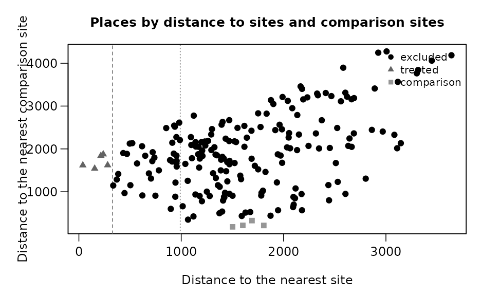
Weighted displacement quotient: did crime move next door?
wdqx(): Asks whether an intervention in an area pushed
crime into the area around it (displacement) or reduced it there too (a
diffusion of benefits). Counts before and after the intervention are
needed for the treated area a, a buffer b
around it and a control area c that neither can reach (see
bufas() for drawing them). With subscripts 0 before and 1
after, the measures of Bowers and Johnson (2003), as Guerette (2009,
Appendix B, equations 1 to 4) states them:
# burglaries: treated 100 -> 60, buffer 50 -> 40, control 200 -> 180
wdqx(a = c(100, 60), b = c(50, 40), c = c(200, 180))
#> sm bdm wdq ge ne ea eb
#> -0.16666667 -0.02777778 0.16666667 40.00000000 0.16666667 90.00000000 45.00000000
#> tne
#> 35.00000000
# Guerette (2009), Appendix D
wdqx(a = c(207, 110), b = c(178, 157), c = c(308, 318))
#> sm bdm wdq ge ne ea
#> -0.32616597 -0.08421139 0.25818569 97.00000000 0.32616597 213.72077922
#> eb tne
#> 183.77922078 130.50000000Prospective hot-spotting: where the next burglaries are likely
prohs(): Asks which places are at most risk in the
coming days, given where and when crimes happened recently. Burglary
risk is raised near a recent burglary for a few weeks (the near-repeat
pattern), so Bowers, Johnson and Pease (2004) score each cell of a grid
by the recent incidents near it, each weighted down with its distance
and its age:
set.seed(6)
n <- 300
p <- cbind(x = runif(n, 0, 2000), y = runif(n, 0, 2000))
day <- sort(sample(1:120, n, TRUE))
r <- prohs(p, t = day, at = 100, win = c(0, 2000, 0, 2000), cell = 100,
bw = 400, ahead = 14)
r$eval
#> n hits hit area pai
#> 36.0000000 4.0000000 0.1111111 0.1000000 1.1111111
image(r$x, r$y, r$z)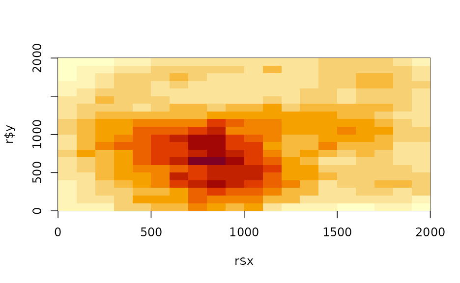
plot(r)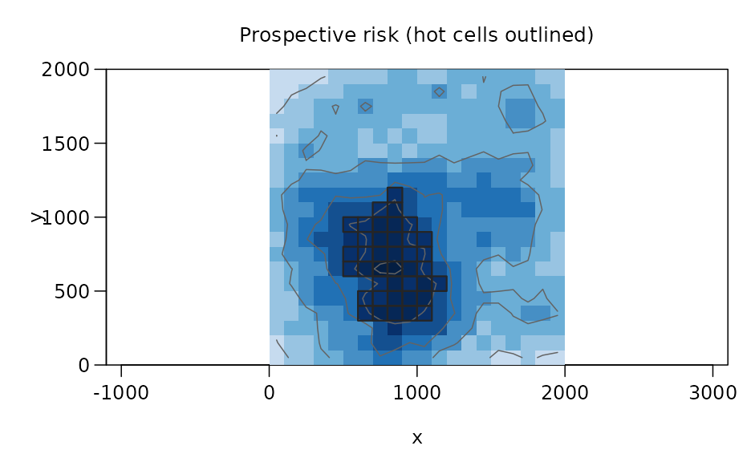
Crime linkage: which crimes belong to one series
lnkpr(): Asks whether two crimes were committed by the
same offender, from how far apart they are in space and time and how
alike the offender behaved (the modus operandi: entry method, property
taken, a weapon shown). For every pair of crimes it gives the distance,
the time between them and the Jaccard similarity of their behaviours
(the behaviours present in both over those present in either; 0 when
neither shows any). On the pairs of solved crimes, linked when they
belong to the same series, a logistic regression of being linked on the
three measures is fitted and each measure’s power to tell linked from
unlinked pairs is the area under its ROC curve (AUC: the chance that a
linked pair is closer, sooner or more alike than an unlinked one; 0.5 is
no better than chance), as Bennell and Canter (2002) did for commercial
burglaries. The fitted model then scores every pair, including those
with an unsolved crime: prob is the estimated chance that
the two are linked.
set.seed(9)
s <- rep(1:6, each = 5)
cx <- runif(6, 0, 5000)[s] + rnorm(30, 0, 1500)
cy <- runif(6, 0, 5000)[s] + rnorm(30, 0, 1500)
day <- runif(6, 0, 300)[s] + rnorm(30, 0, 60)
mo <- matrix(rbinom(30 * 5, 1, 0.3), 30)
sr <- ifelse(runif(30) < 0.2, NA, s)
r <- lnkpr(cbind(x = cx, y = cy), t = day, series = sr, mo = mo)
r$coef
#> term est se z p
#> 1 (Intercept) 0.1466816977 0.4786319854 0.3064603 7.592542e-01
#> 2 dist -0.0001929138 0.0001228189 -1.5707178 1.162482e-01
#> 3 dt -0.0157565696 0.0033891231 -4.6491582 3.332925e-06
#> 4 jac 0.5344187921 0.8865379558 0.6028155 5.466315e-01
r$auc
#> dist dt jac model
#> 0.5950469 0.7775642 0.5022617 0.7888726
plot(r)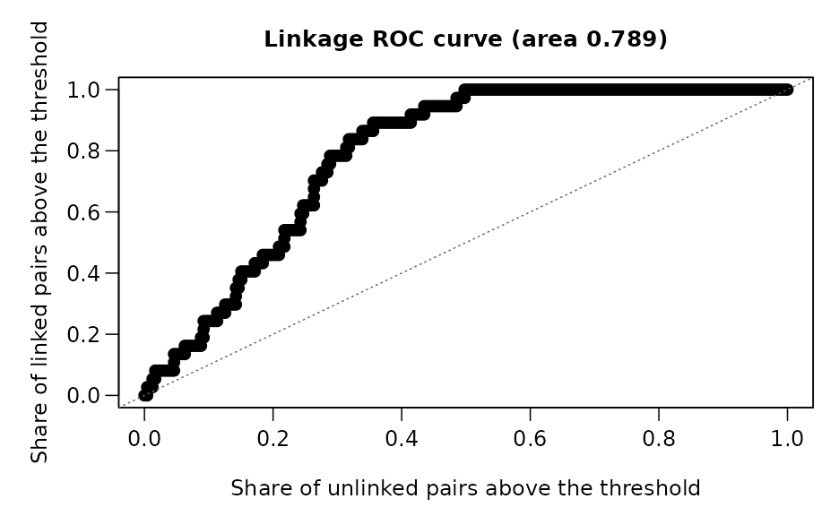
Accuracy of a hot-spot map
hsacc(): Asks how well a map of predicted hot spots
(from kdsurf(), prohs(), rtmfit()
or any score per cell) caught the crimes that followed. The hot cells
are those of highest predicted score whose areas together first reach
the share top of the study area (or the cells marked
TRUE when pred is logical). Then:
set.seed(12)
risk <- rgamma(400, 0.5)
before <- rpois(400, risk)
after <- rpois(400, risk)
hsacc(pred = before, obs = after, top = c(0.05, 0.1, 0.2), prev = before)
#> top cells area ashare n N hit pai nmax pei rri
#> 1 0.05 42 42 0.105 59 177 0.3333333 3.174603 110 0.5363636 0.5451713
#> 2 0.10 42 42 0.105 59 177 0.3333333 3.174603 110 0.5363636 0.5451713
#> 3 0.20 110 110 0.275 107 177 0.6045198 2.198254 177 0.6045198 0.6045198Risk terrain model
rtmfit(): Risk terrain modelling (Caplan, Kennedy and
Miller 2011) relates the crimes counted in the cells of a grid to risk
layers, the presence or density of features (bars, transit stops, vacant
lots) around each cell, by Poisson regression. The exponentiated
coefficient of a layer is its relative risk value; the cells’ relative
risk combines the layers.
rtmfit(c(1, 2, 4, 8, 3, 5), list(bars = c(0, 1, 0, 1, 0, 1),
stops = c(0, 0, 1, 1, 1, 0)))
#> $coef
#> term est se z p rrv lo hi
#> 1 (Intercept) 0.2876821 0.5188745 0.5544348 0.57928134 1.333333 0.4822497 3.686426
#> 2 bars 0.9162907 0.4557327 2.0105880 0.04436899 2.500000 1.0233392 6.107457
#> 3 stops 0.9162907 0.4557327 2.0105880 0.04436899 2.500000 1.0233392 6.107457
#>
#> $cells
#> rr score fitted y
#> 1 1.00 1.00 1.333333 1
#> 2 2.50 2.50 3.333333 2
#> 3 2.50 2.50 3.333333 4
#> 4 6.25 6.25 8.333333 8
#> 5 2.50 2.50 3.333333 3
#> 6 2.50 2.50 3.333333 5
#>
#> $lay
#> bars stops
#> [1,] 0 0
#> [2,] 1 0
#> [3,] 0 1
#> [4,] 1 1
#> [5,] 0 1
#> [6,] 1 0
#>
#> $dev
#> [1] 1.609242
#>
#> $aic
#> [1] 25.89929
#>
#> $conv
#> [1] TRUE
#>
#> $level
#> [1] 0.95
# layers from feature locations
cell <- as.matrix(expand.grid(x = 1:4, y = 1:4))
bars <- rbind(c(1, 1), c(3, 4))
y <- c(3, 1, 0, 0, 2, 1, 0, 1, 0, 0, 1, 2, 0, 1, 2, 3)
rtmfit(y, list(bars = bars), cell = cell, rad = 1.5, kind = "dens")$coef
#> term est se z p rrv lo hi
#> 1 (Intercept) -1.791759 1.000000 -1.791760 0.0731715 0.1666667 0.02347725 1.183179
#> 2 bars 2.261763 1.030776 2.194233 0.0282187 9.6000000 1.27313009 72.388518Choropleth maps in base graphics
chomap(): chomap() shades each area of a
map by the class of its value, with no spatial package: an area is a
matrix of coordinates. The class breaks, the class of each value and the
bounding box are computed by the compiled kernel; R only draws. Areas
are drawn with polypath(), so a ring inside another is a
hole.
sq <- function(x0, y0) cbind(x0 + c(0, 1, 1, 0), y0 + c(0, 0, 1, 1))
p <- list(a = sq(0, 0), b = sq(1, 0), c = sq(0, 1), d = sq(1, 1))
chomap(p, c(12, 3, 7, 25), brk = 2)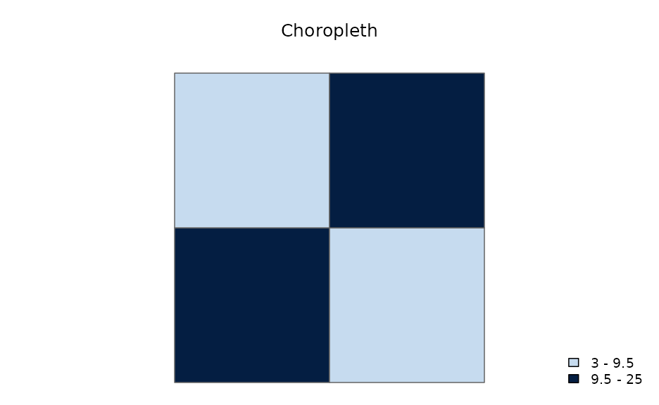
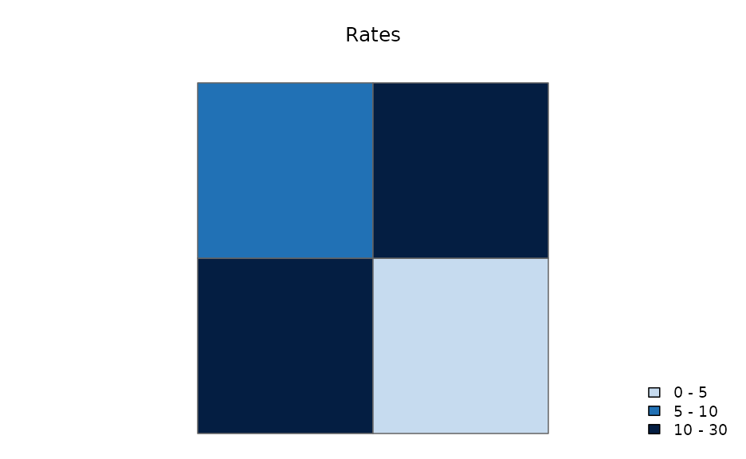
Small multiples of a choropleth map by period
smmap(): smmap() draws one choropleth map
per period in a grid of panels, all with the same class breaks and
colours, so that a change between periods is a change of shade. The
areas, breaks and classes are those of chomap(), the breaks
computed from the values of every period together; the legend is drawn
in the last panel.
sq <- function(x0, y0) cbind(x0 + c(0, 1, 1, 0), y0 + c(0, 0, 1, 1))
p <- list(sq(0, 0), sq(1, 0), sq(0, 1), sq(1, 1))
v <- cbind(`2022` = c(3, 8, 5, 1), `2023` = c(4, 9, 2, 1),
`2024` = c(6, 12, 2, 0))
smmap(p, v, brk = 3)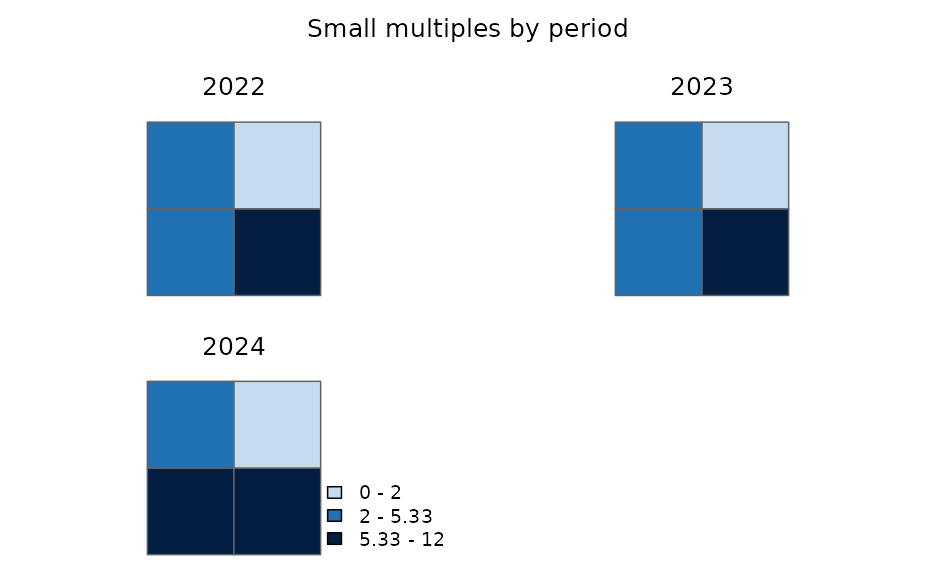
Point maps, with clusters
ptmap(): ptmap() draws points on a map at
an aspect of 1, optionally coloured by cluster: a result of
dbscn() or a cluster number per point. Each cluster has its
own colour and point shape (so the clusters read in grey print too) and
its number at its centre, the mean of its points; noise is drawn as grey
crosses. The box and the cluster centres are computed by the compiled
kernel; R only draws. plot() of a dbscn()
result draws it through ptmap(), given the points it was
found in.
set.seed(1)
p <- rbind(cbind(rnorm(30, 0, 0.2), rnorm(30, 0, 0.2)),
cbind(rnorm(30, 3, 0.2), rnorm(30, 1, 0.2)),
cbind(runif(10, -2, 5), runif(10, -2, 3)))
ptmap(p)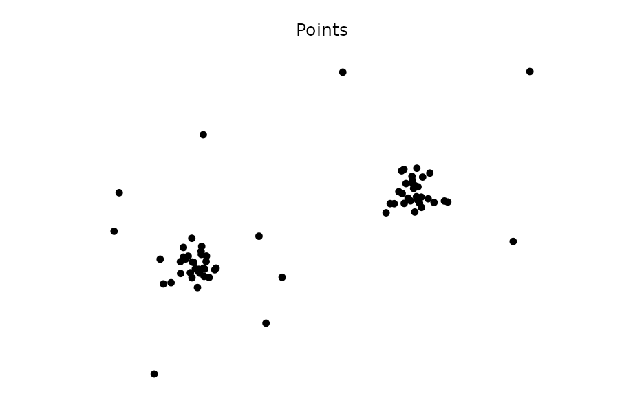
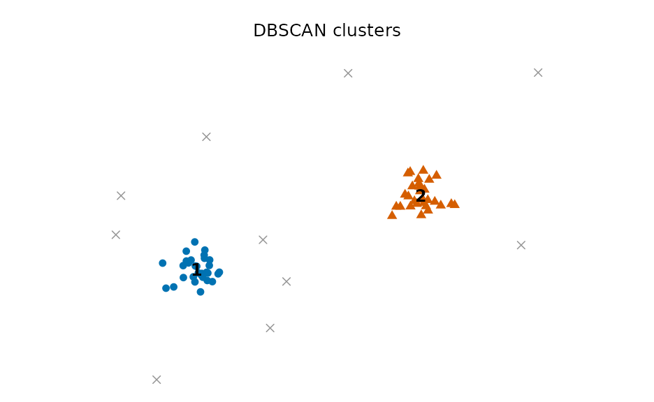
Proportional symbol maps
prpmap(): prpmap() draws a circle at each
point (a district’s centre, say) whose area is proportional to its
value: the radius is rmax times the square root of the
value over the largest value, so the largest has radius
rmax. The circles are drawn largest first, so that the
smaller stay visible over them, and filled half-transparent. The radii,
the drawing order and the box (widened by rmax on every
side so the circles fit) are computed by the compiled kernel; R only
draws.
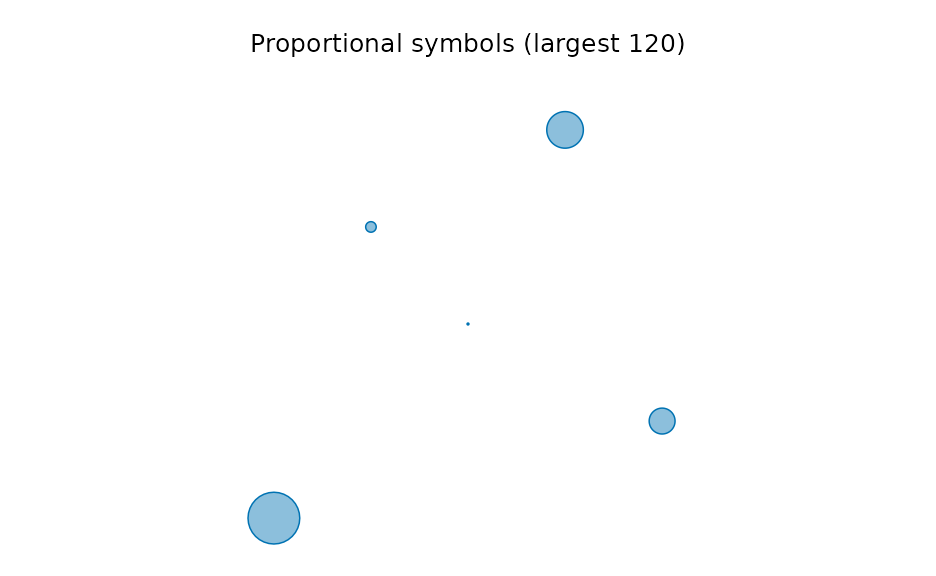
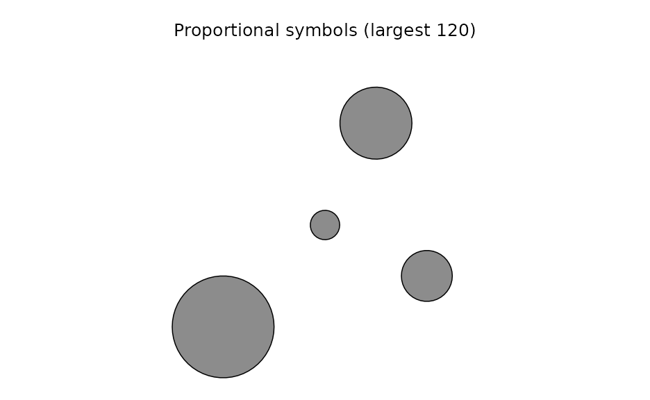
Empirical orthogonal functions of a space-time matrix
eofst(): eofst() decomposes a matrix of
counts or rates, one row per period and one column per place, into
empirical orthogonal functions (EOFs): spatial patterns (the columns of
eofs) whose weights over time (the principal component
series, the columns of pcs) reproduce the centred matrix,
ordered by the share of its variance each explains. A leading pattern
that loads on a cluster of places, with a series that rises, is a hot
spot that grows; a second pattern of opposite signs is a shift of crime
from one set of places to another.
set.seed(3)
yr <- 1:10
z <- outer(yr, c(1, 1, 1, 0, 0, 0)) + matrix(rnorm(60), 10)
colnames(z) <- paste0("ward", 1:6)
e <- eofst(z)
e
#> eofst: 6 components of 10 periods by 6 places
#> component sdev explained cumulative
#> 1 5.8950 0.893300 0.8933
#> 2 1.4340 0.052830 0.9461
#> 3 1.0370 0.027640 0.9737
#> 4 0.7186 0.013270 0.9870
#> 5 0.6166 0.009773 0.9968
#> 6 0.3538 0.003218 1.0000
round(e$eofs[, 1], 2)
#> ward1 ward2 ward3 ward4 ward5 ward6
#> 0.58 0.57 0.57 -0.05 -0.05 0.03Thin-plate spline surface
tpsurf(): tpsurf() fits a thin-plate spline
to values measured at points in the plane (rates at area centroids, say)
and evaluates it on a grid over their box: a smooth surface that passes
through the values when lam is 0 and is smoothed towards a
plane as lam grows. It complements kdsurf(),
which smooths the points themselves rather than values at them.
set.seed(2)
x <- runif(40)
y <- runif(40)
s <- tpsurf(x, y, sin(4 * x) + y^2 + rnorm(40, sd = 0.05), lam = 0.001,
nx = 30)
s
#> tpsurf: thin-plate spline of 40 points, lambda 0.001, residual sum of squares 0.002046; grid 30 x 30
plot(s)
plot(s)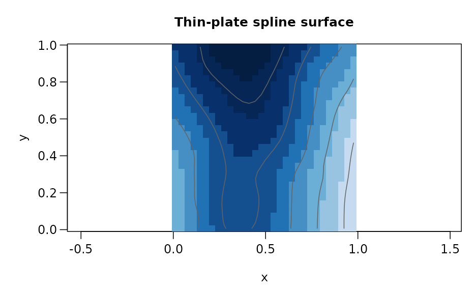